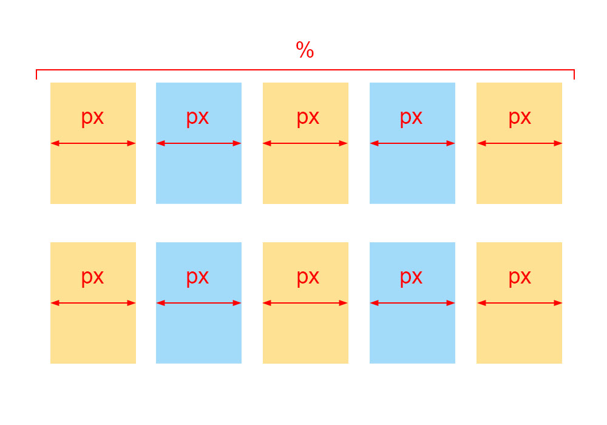

其實寫這篇文章的理由很單純，因為自己以前在學 CSS 的時候，撞過不少次牆壁。
直到現在，我也不敢保證說自己已經完全掌握 CSS 這個讓人又愛又恨的東西。
為什麼說 CSS 讓人又愛又恨？因為當完成一個版面時，那份成就感是讓人感到很舒服的，不過跑版的時候就是另外一回事了…
總而言之，最近因為準備作品的關係，得回來重新回溫一些 CSS 的知識。 特別是在響應式這一塊。
我想各位應該都很清楚在這個時代，響應式是個不可或缺的條件吧。
所以就讓我們從最基本的佈局（Layout）來一個個介紹吧。
導覽
雖然不保證這裡介紹的版面能夠含括所有種類，但我想這些應該都能稱的上是比較廣泛跟常見的類型。
這次會介紹的版面有這些：
固定式版面
顧名思義，整個網頁的寬度都會是固定的，並且以 「px」 來作為單位。
這是最好理解也是最簡單的方式，不過大部分只有在一開始切出版面時，才會暫時先這樣使用。
Codepen：
See the Pen 固定式版面 by jim (@jubeatt) on CodePen.
流動式版面
流動式版面最大的特點就是，一個區塊會有 「伸縮（流動）」 的效果，所以會改以 「%」（也有人用「em」） 來作為單位。
而流動式版面又可以在分成：
- 液態式版面（全程都使用%）
- 彈性式版面（除了 % 以外，再加上
min-width/max-width來控制最大與最小範圍） - 流動式格線版面（% 混合 px）
液態式版面
整個版面就像水一樣非常流動，這樣的好處是能夠隨著視窗來做伸縮，不會有出現滾軸的情況發生。
但有一個問題是，當 「視窗很大 / 很小」 時，畫面就會變得太緊繃或太寬敞，導致整個網頁看起來怪怪的。
Codepen：
See the Pen 液態式版面 by jim (@jubeatt) on CodePen.
彈性式版面
這個版面是為了解決液態式版面中「視窗很大 / 很小」的問題，這裡利用了兩個 CSS 屬性：
min-width（最小寬度）max-width（最大寬度）
簡單來說：
當一個區塊的寬度 < min-width時，寬度會固定在min-width設定的值，
當一個區塊的寬度 > max-width時，寬度會固定在max-width設定的值。
當這樣子設定後，就能確保版面在限制的範圍中伸縮，避免極端值的狀況。
Codepen：
See the Pen 彈性版面 by jim (@jubeatt) on CodePen.
流動式格線版面

你可以把這種版面當作是一種「混合」的概念。
這種類型的版面會讓外層容器 「流動（%）」，內容區塊 「固定（px）」。
將這兩者混合，再透過 CSS 的排版設計，就能做出 「隨著寬度產生不同數量的欄位區塊」 這種效果！
Codepen：
See the Pen 流動式格線版面 by jim (@jubeatt) on CodePen.
分欄式版面
了解上面的概念後，你就能利用它們做出一個簡單的版型囉！
不用想的太複雜，主要就只是的「單欄 / 多欄」的差別而已。
而大多數會使用單欄的情況是為了「手機版面」的需求（畢竟手機的寬度有限嘛！），
至於多欄大部分是給「電腦版 / 平板」的需求囉！
不過這只是大部分，不代表一定是照著這個規則。
總而言之，還是要看一個網頁的風格取向與使用需求來決定該怎麼分割。
單欄式版面
痾…其實就是一個你用手機去大部分的網站都能看到的單欄版面這樣。
絕對沒有私藏什麼撇步！都是前面講過的概念，有興趣的人也可以自己試試看。
Codepen：
See the Pen 單欄式版面 by jim (@jubeatt) on CodePen.
多欄式版面
一樣是一個基本的兩欄版面，使用了會暴露年齡的「float」來排版。（喂
只要你會兩欄的話，那三欄、四欄、八十七欄，應該都不會有什麼太大的問題，所以這裡就不再多做示範了。
Codepen：
See the Pen 兩欄式版面 by jim (@jubeatt) on CodePen.
格線版面
格線式版面
如果要用一句簡單來說明什麼是格線，我會說是 「排格子」。
因為這種版面其實就是用很多的格子一個個排好、放好，弄成你想要的畫面。
而網格系統基本上會先設定好初始數值，像是：
- 總共有幾個欄？（直排）
- 一行有多寬？（橫排）
- 一欄有多寬？（直排）
- 欄與欄之間的間距要多少？
如果以上面的圖片來看的話：
- 總共有 12 欄
- 一行的寬度為: 940px
- 一欄的寬度 : 60px
- 欄與欄之間的間距 : 20px
所以假設我希望切出兩個區塊，那就會是：
「第一個區塊要佔 6 欄、第二個區塊要佔 6 欄」
所以兩個區塊會各自佔據 460px 的寬度（六個欄寬: 60 x 6 + 五個間距: 20 x 5）
如果還是不太清楚的話你可以對照著上面的圖來看，應該會比較好理解。
所以要怎麼做出網格呢？
根據目前我所知道，你可以用以下的方式：
- 使用 CSS 中的
grid屬性 - 使用現成的網格框架（例如：960 grid system）
如果你對grid有興趣的話，可以在自行搜索一些相關資訊，
不過這邊為了方便起見，是使用現成的框架來做示範。
Codepen：
See the Pen 格線式版面 by jim (@jubeatt) on CodePen.
給萌新的一些小提醒
示範中是使用 960 grid system 這個框架來操作，所以可能對於第一次接觸框架的人會看不懂我在寫什麼。
但別擔心，其實這一樣是用上面所說的規則在操作的，所以你只要先理解上面的意思，之後再慢慢去補這方面的相關知識即可。
無格線式版面
很明顯就是一個秀技術的版面！
這種版型的概念是把整個頁面當作是一個 「畫布」，你想放什麼？放在哪裡？都任君挑選。
要實現這個版面，基本上會需要依賴大量的 position 屬性來達成。
雖然看起來很酷炫，不過除非你有追求視覺效果的特殊需求，否則我個人不推薦使用這種版型。
- 實用度比較低
- 考慮到響應式與相容性的問題時，整個 CSS 也會變得相對複雜許多。
換句話說，除非你有很高超的技術，不然這不是你該隨便亂碰的版型。（不要玩版型）
Codepen：
See the Pen 無格線式版面 by jim (@jubeatt) on CodePen.
複合式版面
主角總是到最後才登場。
沒有錯，這篇文章的重點就在於這個部分了。
粗略一點來說，就是我們很常聽到的的響應式版面。
不過如果你上網查詢一些相關資料的話，會發現響應式大致上可以在分成以下兩種：
- 響應式版面（Response Web Design，以下簡稱 RWD）
- 適應式版面（Adaptive Web Design，以下簡稱 AWD）
百花齊放，百家爭鳴。
對於這兩種版面的實際差異，每個人有不同的看法，所以我這裡會用我自己的想法來解釋。
什麼是響應式網頁（Response Web Design）？
響應式網頁最初是由 “Ethan Marcotte” 在A List Apart 2010 年 5 月的一篇文章中提出的一種想法。
（這裡只會大略的講一些大意，有興趣的人可以點進去看更完整的內容。）
作者首先在文章中點出了當時網頁設計佈局所面臨到的問題：
Can we really continue to commit to supporting each new user agent with its own bespoke experience? At some point, this starts to feel like a zero sum game. But how can we—and our designs—adapt?
我們真的要持續的為每一個新的使用者客製化一套專屬於他們的體驗嗎？從某些點來說，這開始讓人感覺像是場永遠通不了關的遊戲。但是我們又要如何讓網頁設計能夠做到 “適應” 這件事？
隨著各式各樣的裝置誕生，我們不能永遠停留在過去的思維，為每一個裝置來設計專屬的網頁佈局。
而是要轉變成「能夠響應到每個裝置」的這種設計思維。
為了實現這個理念，作者就和我們前面所講的一樣，讓網頁的區塊變成是「流動的」，這樣確實就能夠做出具有彈性的佈局。
但儘管如此，要真正實現響應式這個想法還是不夠的。如果我們只是單純的讓每個區塊變成是流動的，還是會引發一些問題。（譬如說：解析度特大或特小的裝置）
為此，media queries的存在就很重要了。
media queries可以做到我們原本做不到的事，像是：
- 在視窗寬度小於 xxx 時… (
min-width) - 在手機畫面顯示為 xxx 時… (
orientation: landscape) - 顯示區域的長寬比為 xxx 時 (
aspect-ratio) - 螢幕的長寬比為 xxx 時 (
device-aspect-ratio) - 畫面的像素密度為 xxx 時 (
resolution)
所以只要能夠善用media queries，基本上就能實現響應式這個概念。
這也是為什麼每當提到響應式，就會跟media queries扯上關係的原因。
那什麼又是適應式網頁？（Adaptive Web Design）
適應式網頁是從 2011 年 “Aaron Gustafson” 在他的著作 Adaptive Web Design: Crafting Rich Experiences With Progressive Enhancement 提出的另外一種思維。
所以就時間點來說， AWD 是在 RWD 出現一段時間後， 才被提出的一種設計思維。這也暗示了 RWD 所遭遇的一些問題。
你可以想想看，如果 RWD 是以「在每個裝置都顯示相同的內容」為前提來設計的，
那現在假設有個網頁的內容非常多，而且有大筆的資料要載入時，使用手機的人可能會碰到什麼問題？
你第一個會直覺想到的可能是載入速度，其次為 使用者體驗(UX) ，而這也是最主要的兩個問題。
為了改善這個問題，AWD 的想法就浮現出來了。
所以這裡簡單的介紹一下，AWD 到底是什麼？
首先 AWD 的設計思維是，預先對每個裝置設定好 斷點(breakpoint) 。
譬如最主流的六個：320, 480, 760, 960, 1200 1600 (pixels)
接著在為每一個斷點來設計專屬的 固定尺寸（例如：px） 頁面。
所以簡單來說，每一個裝置都會有一個專屬自己的佈局。每當載入這個網頁時，網頁伺服器就會去偵測裝置，並且回應一個最適合這個裝置的頁面給它。
要怎麼區分一個網站是 RWD 還是 AWD？
其實很簡單，因為不久前我們說過 AWD 的網頁佈局是採用 「固定尺寸」。
所以你只要試著去調整瀏覽器的視窗，看看畫面是否會有流動（伸縮）的反應就可以判斷。
- 如果有伸縮的效果 → RWD
- 如果沒有伸縮的效果 → AWD
為了方便理解，這裡也提供了一些範例給各位：
同樣的網站，你用手機跟電腦點進去，會得到不一樣的結果。
除了整體的排版明顯不同之外，內容上也不太一樣。
不知道你有沒有一種回到過去手機版、電腦版的既視感，不過這並不是，這是 AWD。
（如果是手機板，網址通常會有一個前墜字 m）
這裡我也畫了圖來讓大家更好理解這個概念：
或者你也能參考這張圖：
除了以上這些以外，不管是 RWD，還是 AWD，又或是 RWD 與 AWD 之間的差異。
其實都還有很多可以探討的細節，但如果要全部講完的話，這篇文章可能會非常非常的長～
所以目前就先點到這裡，希望你能對這兩個東西都能有一些概念就好了！
這裡也做一個簡單的整理。
| 響應式(RWD) | 適應式(AWD) |
|---|---|
| 由瀏覽器決定頁面（用戶端） | 由伺服器決定回傳頁面（伺服器端） |
| 流動區塊 | 固定區塊 |
| 隨寬度改變做調整 | 載入時偵測並回傳對應網頁 |
| 穩定性較差（一個掛 = 全掛） | 穩定性較高（各種裝置的網頁間互不影響） |
| 不具有特徵偵測功能 | 具有特徵偵測功能 （利於商業廣告） |
| 所有裝置採用一種佈局 | 一個裝置一種佈局 |
| 接受相同網頁的資料 | 根據回傳頁面決定資料量 |
| 載入效能較差 | 載入效能較優 |
| 設計範圍較受侷限 | 可對裝置客製化 |
| 成本低、較簡易、快速 | 製作成本高、耗時、複雜 |
至於其於的部分，就留給各位去自行探討了。
實作響應式版面
See the Pen 響應式版面(flex) by jim (@jubeatt) on CodePen.
這裡使用 flex 實作，我個人認為以這個範例來說， flex 會比較容易達成，也比較好理解。
當然，如果你想看float版本，可以參考這裡
實作適應式版面
See the Pen 適應式版面 by jim (@jubeatt) on CodePen.
注意：
這裡只是做一個演示，主要是呈現「固定版面」的效果。
實際上 AWD 並不是這個樣子哦，據我所知，除了搭配mediq queries以外，真正的 AWD 還需要搭配一系列的 JavaScript 操作來達成。（若有說錯請在糾正我）
所以這裡的範例僅供參考，請不要當成是真的 AWD 哦！
文末
我想在這個滿大街都是響應式的時代，響應式設計是一個前端工程師不得不學習的一項技能。
儘管現在有各種框架，但再方便的框架終究還是會有它的限制與極限。
所以有些時候，我們還是得具備一些手刻的能力。
響應式設計看似複雜，但它其實也是從最開始的固定版面，一步一步演化過來的產物。
我認為響應式的背後其實就是把這些各式各樣的版型，一個個堆疊起來的一種版型。
身為一個學習 CSS 約兩年多的人，我相信試著去理解這些東西，應該會對你在設計版面能有一些幫助。
當然，這篇文章也許有很多該提的東西沒有提到，這是因為不希望弄得太複雜，所以才簡化了不少內容。
如果你發現文中有錯誤的地方，或是你有其他的疑問或建議，都歡迎你寄信給我。
你的回應，對我而言就是最大的支持。
最後，非常謝謝看完這篇文章的各位！
參考資料
STUDIO_by_UXPin
interaction-design
meebox_blog
iki0723_blog
The Beginner’s Guide to Adaptive Web Design
960 grid sysyem
HTML5 ‧ CSS3 最強圖解實戰講座
HTML and CSS : Design and Build Websites